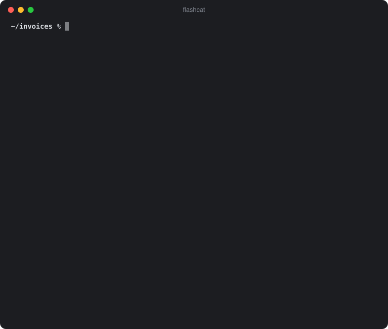

✻ Flashcat
A local AI assistant for your Mac terminal – private and offline.

What it can do
Flashcat works in the folder you start it in. Ask in plain language – it reads, writes and searches for you, and asks before it changes anything.
Files
List, read, search, create and change text files. Create Word and PDF documents, rename and move files – many at once, undone in one step.
Documents
Reads PDF, Word and Excel – even scanned PDFs and images, through the text recognition built into macOS.
Images
Describes and analyzes the pictures in your folder.
Coding
Reads, explains, writes and fixes code, and runs your tests and scripts in a sandbox to check its work – you confirm every change and every command. It is no Claude Code, but it does a solid job on simple tasks, free and fully on your Mac.
Web
Searches the web (DuckDuckGo) and reads web pages – only after you say yes.
Terminal
Answers stream live with Markdown, tables and highlighted code. Paste screenshots
with Ctrl+V, or ask once without a chat: cat log | flashcat "why?"
Nothing happens behind your back
It only sees the folder you start it in, it asks before every change and every internet access, and your private data stays locked. Enforced by code, not by the model.
✻ Your files
Only the start folder and its subfolders. Hidden files in your home folder, ~/Library
and private keys are locked. Commands run in a sandbox: no internet, they can only write inside
the folder, and nothing they start keeps running. Git hooks they sneak in are caught and undone.
✻ Every change asks first
You see a preview – or the full command – before you answer Y. The old version is
backed up, and /undo reverts the last change.
✻ Stays on your Mac
The model runs locally in LM Studio or Ollama. Nothing leaves your computer unless you allow a web request – and you always see the full address first.
All details: Safety in the README and SECURITY.md. Flashcat is powered by a language model – please double-check important results.
Which Mac?
Built and tuned on a MacBook Air M5 with 24 GB. The default model, Gemma 4 26B, needs about 15.6 GB of memory.
The model barely fits, and answers get slow.
Close all other apps while you use Flashcat. Otherwise macOS moves parts of the model to disk and answers become much slower.
Keep your other apps open.
Only the M5 is tested so far. Tried it on another Mac? Let me know how it runs.
Install
macOS on Apple Silicon and Apple's command line tools (xcode-select --install).
- Install LM Studio or LM Studio Bionic (or Ollama) and open it once.
- Run this in the terminal:
curl -fsSL https://raw.githubusercontent.com/TomTomsen765/flashcat/main/install.sh | bash - Go to a folder and start it:
cd ~/Documents && flashcat
The installer downloads the default model (about 15.6 GB) through LM Studio (or Ollama).
With Homebrew: brew install tomtomsen765/tap/flashcat. Both LM Studio and Ollama
installed? Flashcat asks once which one to use (change it with flashcat --backend).
Prefer to read the code before running it?
Here is how.
Update later with flashcat --update – you only get published releases that passed the
automated safety tests.